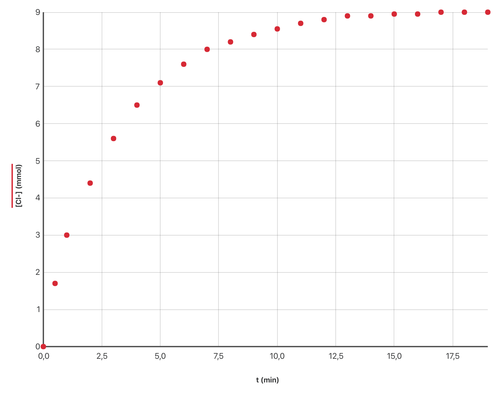

La transformation étudiée
Le 2-chloro-2-méthylpropane réagit avec l’eau pour donner naissance à un alcool : le 2-méthylpropan-2-ol. Cette transformation est lente et totale. On peut la modéliser par l’équation : $$ \ce{(CH3)3C–Cl(liq) + 2H2O(liq) –> (CH3)3C–OH(liq) + H3O+(aq) + Cl–(aq)} $$
Données
- Masse molaire : $M(\ce{(CH3)3C-Cl}) = \pu{92,0 g.mol–1}$.
- Masse volumique : $\rho = \pu{0,85 g.mL–1}$.
- La conductivité d’un mélange est donnée par $\sigma = \sum \lambda_i [X_i]$ où $[X_i]$ désigne la concentration des espèces ioniques présentes dans le mélange, exprimée en $\pu{mol.m–3}$.
- Conductivités molaires ioniques : $\lambda (\ce{H3O+})= \pu{349,8e–4 S.m2.mol–1}$ et $\lambda (\ce{Cl-})= \pu{76,3e–4 S.m2.mol–1}$.
Protocole observé
- Dans une fiole jaugée, on introduit $\pu{1,0 mL}$ de 2-chloro-2-méthyl-propane et de l’acétone afin d’obtenir un volume de $\pu{25,0 mL}$ d’une solution $S$.
- Dans un bécher, on place $\pu{200,0 mL}$ d’eau distillée dans laquelle est immergée la sonde d’un conductimètre. Puis, à l’instant $t = \pu{0 min}$, on déclenche un chronomètre en versant $\pu{5,0 mL}$ de la solution $S$ dans le bécher.
- Un agitateur magnétique permet d’homogénéiser la solution obtenue, on relève la valeur de la conductivité du mélange au cours du temps.
-
Montrer que la quantité initiale de 2-chloro-2-méthylpropane introduite dans le dernier mélange est $n_0 = \pu{1,8e–3 mol}$.
-
Établir le tableau d’avancement de la transformation. Quelle relation lie $[\ce{H3O+}]$ et $[\ce{Cl–(aq)}]$ à chaque instant ?
-
Donner l’expression de la conductivité $\sigma$ du mélange en fonction de $[\ce{H3O+}]$ et des conductivités molaires ioniques.
-
Donner l’expression de la conductivité $\sigma$ du mélange en fonction de l’avancement $x$ de la réaction, du volume $V$ du mélange réactionnel et des conductivités molaires ioniques des ions présents dans la solution.
-
Pour un temps très grand, la conductivité $\sigma$ du mélange ne varie plus. Sachant que $\sigma = \pu{0,374 S.m–1}$, vérifier que la transformation envisagée est bien totale.
Exploitation des résultats
La courbe ci-dessous montre les variations de la concentration en ion chlorure $[\ce{Cl–(aq)}]$ en fonction du temps.

-
Justifier d’après les valeurs du graphique que l’état final de la transformation est atteint après 20 minutes.
-
On note $V$, le volume total de la solution. Écrire l’expression de la vitesse volumique d’apparition des ions chlorure puis évaluer graphiquement la valeur de cette vitesse à $t = \pu{0 s}$.
-
À l’aide de la courbe, indiquer comment évolue cette vitesse au cours du temps.
-
Quel facteur cinétique permet de justifier cette évolution ?
-
Définir le temps de demi-réaction et estimer graphiquement sa valeur.
On réalise maintenant la même expérience à une température plus élevée.
-
Dessiner qualitativement sur le graphique précédent l’allure de la courbe montrant les variations de l’avancement $x$ au cours du temps.
-
La valeur du temps de demi-réaction est-elle identique, inférieure ou supérieure à la valeur précédente ? Justifier.